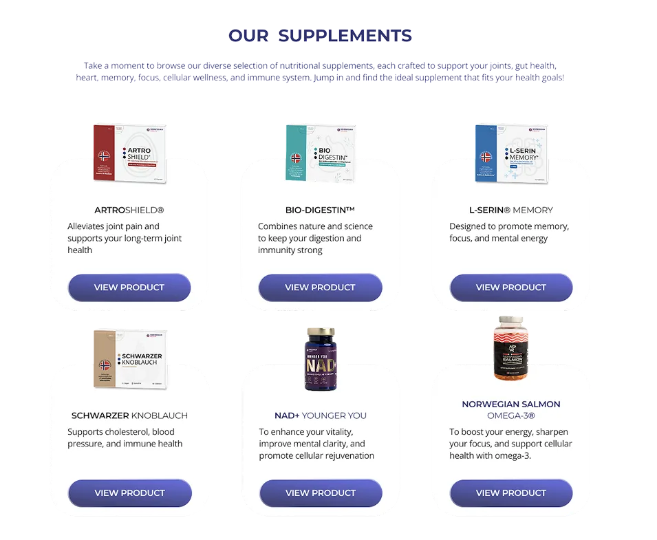
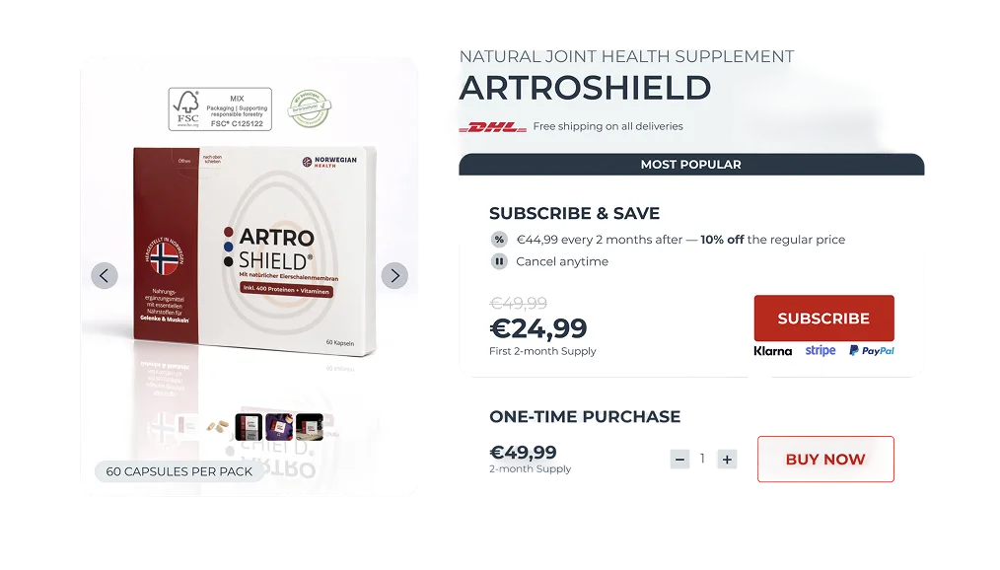
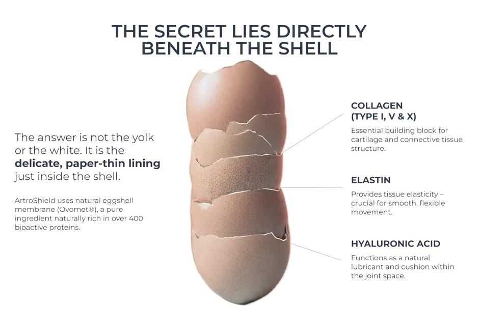

Case study — 01
Why killing an 80% sales funnel actually saved this supplement brand.
A premium supplement brand blamed design for low sales, but an obscured subscription checkout was driving a 90% product return rate.
The client
They sell premium, certified supplements to an older demographic.
The client offered high-priced supplements backed by real certifications. They came to us with stagnant sales, convinced a visual redesign would fix things. They used a free trial model to acquire users, aiming to boost revenue without changing the offer.
The problem
“Our site looks outdated. We need a modern redesign to increase our product sales.”
They didn't have a visual design problem; they had a business logic flaw. Customers clicked ‘try for free’ into an undisclosed subscription. They'd get billed later and return it. A visual reskin wouldn't fix the underlying checkout model driving a 90% return rate.
- Signal A massive 90% return rate buried in Shopify data, costing them double in shipping.
- Constraint We were initially hired just to reskin the landing pages and product catalog.
- Unknown Would an honest checkout kill their acquisition numbers completely?
How it got solved
Hover a step
-
01
Redesigned the catalogue
I built the requested educational pages first. It improved the promise but didn't stop the returns.

REDESIGNED CATALOGUE: SIX PRODUCTS, ONE CLAIM EACH -
02
Uncovered the real P&L issue
I dug into their Shopify data and session recordings. I found a 90% return rate tied to the trial.
SESSION RECORDINGS: 60-DAY INVOICE TO CHURN TIMELINE -
03
Rebuilt for opt-in transparency
I redesigned the checkout to require active subscription opt-in and added a one-time purchase option.

OPT-IN CHECKOUT: SUBSCRIPTION AND ONE-TIME PURCHASE, PRICED IN THE OPEN -
04
Argued the case with evidence
Order volume fell 80%, causing client concern. I walked the CEO through unit economics to show net profit gains.
REAL COST PER ORDER: SHARE OF ORDER VALUE, $0 TRIAL VS OPT-IN -
05
Rolled back the visual design
They reverted the catalogue look but kept the honest checkout. Total retained customers grew by 80%.

THE REVERTED CATALOGUE LOOK: INGREDIENT EDUCATION PAGE
The impact
While top-line orders dropped, actual kept products increased by 80%.
- −80%
- Initial order volume
- 10%
- Final return rate
- +80%
- Retained customers
By eliminating deceptive acquisition logic, we halted an unsustainable wave of fulfillment losses, customer support tickets, and return shipping fees. It reinforced my core belief as a senior designer: UX problems are almost always P&L problems in disguise.